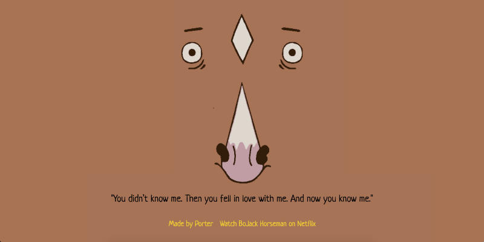

I went back to the basics with this recent build I submitted to the 10k Apart web challenge: I built a <10KB website and to take it a step further, I tried to build it in less than 12 hours. One of my good friends was visiting LA and brought the contest to my attention. We decided to do a collaboration, where I would work on the design and development and she did the assist with the content and layout.
We shot a few ideas back and forth between us for a few hours playing devil’s advocate with each other’s ideas. We finally decided on basing the <10KB website on a show we’ve been binge watching on Netflix: BoJack Horseman. If you haven’t heard or watched it yet, highly recommended.
Inspiration:
Every episode we’ve watched, we always catch these awesome one liners or quotes that the characters share. They’re funny, extremely dark, or just some real life musings. Overall, we loved it and wanted to share his musings with the world.
Our thought was to put BoJack’s face on the webpage and have his quotes rotate through when someone lands on the page.
Sounds simple…right? Sort of.
Hurdles:
- Keeping the website <10KB. Not as easy as it sounds.
- Trying to not compromise on the design too much.
- Completing in <12 hrs.
Our Strategy
Keeping the Website <10KB
We decided to create the website from start to finish, check out how much we were off from the 10KB and start stripping from there. We had to keep reminding ourselves that we had to keep the website as minimal as possible. Any frills would need to be absolutely necessary. When the first version of the website was completed, we were at 38KB. Stripping down the website was not as easy as we thought it would be. However, the fun part was finding creative ways to downsize the file and implement little hacks.
HTML
<div class="wrapper">
<div class="bojack" id="bojack">
<div class="diamond"></div>
<div class="eyes">
<div class="eyes-left"></div>
<div class="eyes-right"></div>
</div>
<div class="nose"></div>
</div>
<div class="quotes" id="quotes">
I’m responsible for my own happiness? I can’t even be responsible
for my own breakfast!
</div>
<div class="link">
<a href="http://www.madebyporter.com" target="_blank">Made by
Porter</a><a href="https://www.netflix.com/title/70300800" target=
"_blank">Watch BoJack Horseman on Netflix</a>
</div>
</div>
CSS
body {
background: #a87354;
height: 100%;
font-family: "Neucha","Indie Flower","Caveat","Helvetica","Comic Sans MS",cursive;
padding: 0;
margin: 0;
}
* {
box-sizing: border-box;
}
ul,ol {
list-style: none;
margin: 0;
padding: 0;
}
.wrapper {
padding: 40px 0 0;
width: 100%;
}
.bojack {
margin: 0 auto;
position: relative;
width: 100vw;
-webkit-transform: translate(0,0);
transform: translate(0,0);
-webkit-transition: all 300ms cubic-bezier(0.14,0.62,0.39,1) 0;
transition: all 300ms cubic-bezier(0.14,0.62,0.39,1) 0;
}
@media(min-width:375px) {
.bojack {
width: 80vw;
}
}
@media(min-width:800px) {
.bojack {
width: 60vw;
}
}
@media(min-width:1200px) {
.bojack {
width: 40vw;
}
}
.bojack.bounce {
-webkit-transform: translate(0,-20px);
transform: translate(0,-20px);
}
.eyes {
display: -webkit-box;
display: -webkit-flex;
display: -ms-flexbox;
display: flex;
-webkit-justify-content: space-around;
-ms-flex-pack: distribute;
justify-content: space-around;
position: absolute;
top: 40px;
width: 100%;
}
.eyes div {
background-image: url(img/bojack-sprite-2.png);
}
.eyes-left {
background-position: 0 0;
background-repeat: no-repeat;
height: 124px;
width: 72px;
}
.eyes-right {
background-position: -73px 0;
background-repeat: no-repeat;
height: 124px;
width: 72px;
}
.nose {
background-image: url(img/bojack-sprite-2.png);
background-position: -217px 0;
background-repeat: no-repeat;
height: 303px;
width: 169px;
left: 50%;
position: absolute;
-webkit-transform: translate(-50%,0);
transform: translate(-50%,0);
top: 200px;
}
.diamond {
background-image: url(img/bojack-sprite-2.png);
background-position: -149px 0;
height: 151px;
position: absolute;
width: 68px;
left: 50%;
position: absolute;
-webkit-transform: translate(-50%,0);
transform: translate(-50%,0);
}
.quotes {
position: absolute;
left: 50%;
position: absolute;
-webkit-transform: translate(-50%,0);
transform: translate(-50%,0);
text-align: center;
bottom: 110px;
vertical-align: middle;
display: inline-block;
font-size: 1.8em;
width: 70vw;
}
.quotes:before {
content: open-quote;
}
.quotes:after {
content: close-quote;
}
.link {
bottom: 40px;
position: absolute;
text-align: center;
left: 50%;
position: absolute;
-webkit-transform: translate(-50%,0);
transform: translate(-50%,0);
}
.link a {
color: #f1cf14;
font-size: 1.4em;
text-decoration: none;
display: inline-block;
margin: 0 10px;
}
.link a:hover {
border-bottom: 2px solid #f1cf14;
}
Javascript
var quotes = [
"I’m responsible for my own happiness? I can’t even be responsible for my own breakfast!",
"I just spent 6 hours playing with fonts? Holy shit!",
"You didn’t know me. Then you fell in love with me. And now you know me.",
"I need to go take a shower so I can’t tell if I’m crying or not.",
"Man, I really regret buying those muffins and then eating them all on the drive home.",
"Closure is a made up thing.",
"I can’t say no to people because I want everyone to like me.",
"Not understanding that you’re a horrible person doesn’t make you less of a horrible person.",
"Somethings I feel like I was born with a leak, and any goodness Is tarted with just slowly spilled out of me, and now it’s all gone."
];
function rotatequote() {
thequote = quotes.shift();
quotes.push(thequote);
document.getElementById("quotes").innerHTML = thequote;
var a = document.getElementById("bojack");
a.className += " bounce";
setTimeout(function() {
a.className = "bojack"
}, 300);
t = setTimeout("rotatequote()", 5000)
}
rotatequote();
Keep a Sleek Design
The best answer to this is compromise. Our website idea was minimal but we wanted to do a lot to make up for it design-wise.
Character Background Design:
With the original design, we wanted to have BoJack’s eyes and diamond and place a tiled background for his color vs. using a plain brown. It didn’t work out with the size restrictions so we had to forego the background and instead we added his nose to show you it was him. To limit the number of images, we added a simple code to invert the eye image. This took some strategic thinking to make it work and it did!
Font:
Picking the right font was a doozy. As a designer, typography is a crucial tool in the designer toolkit. Imagine my surprise when I saw that the font I originally downloaded took up 38 KB. To match the BoJack Horseman theme, I found a font that was in Google Fonts to limit space. We both searched the collection to find popular fonts that most designers or users would have to not compromise on the design. We decided on ___ and added other default fonts if users didn’t have it installed. We tried as hard as possible to not add Comic Sans but it’s low on the bottom.
Execution
After multiple changes, testing the file size, and picking quotes, we were able to deliver a working website in less than 12 hrs. Granted, it’s not perfect, but I’m pretty proud of it. It gave me a chance to test my skills as a developer and designer to produce a high quality product with constraints.
I would love to come back to this project and develop it some more, i.e. making it more mobile friendly.
Final Product:
